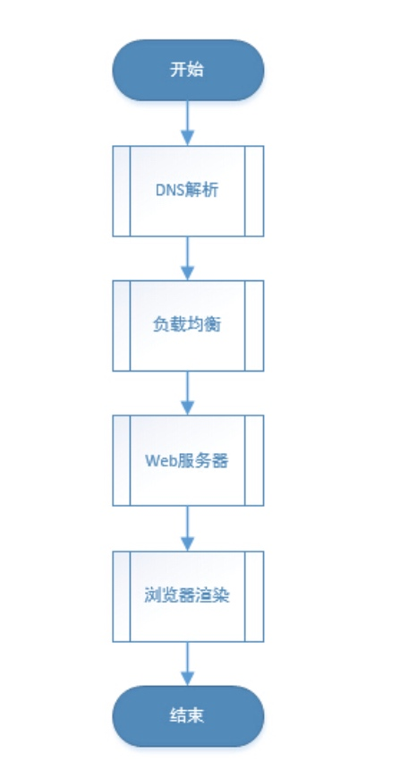
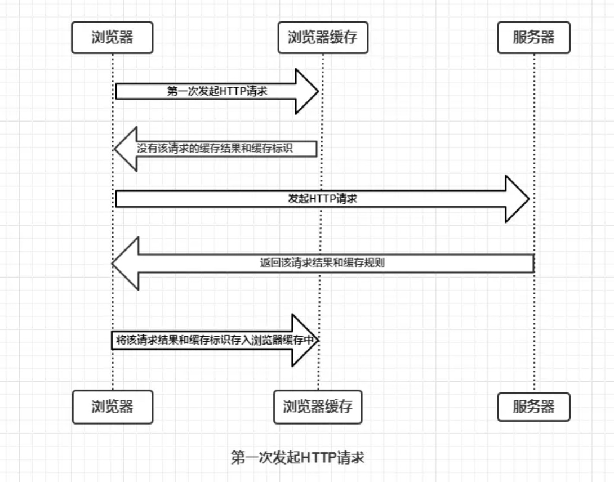
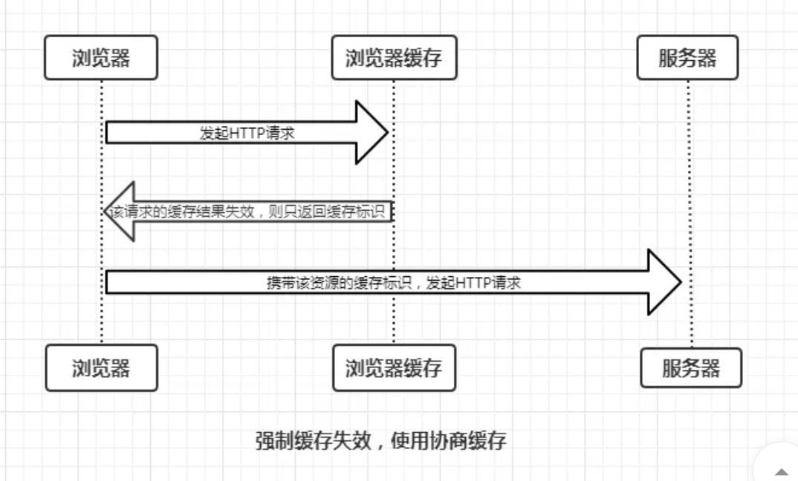
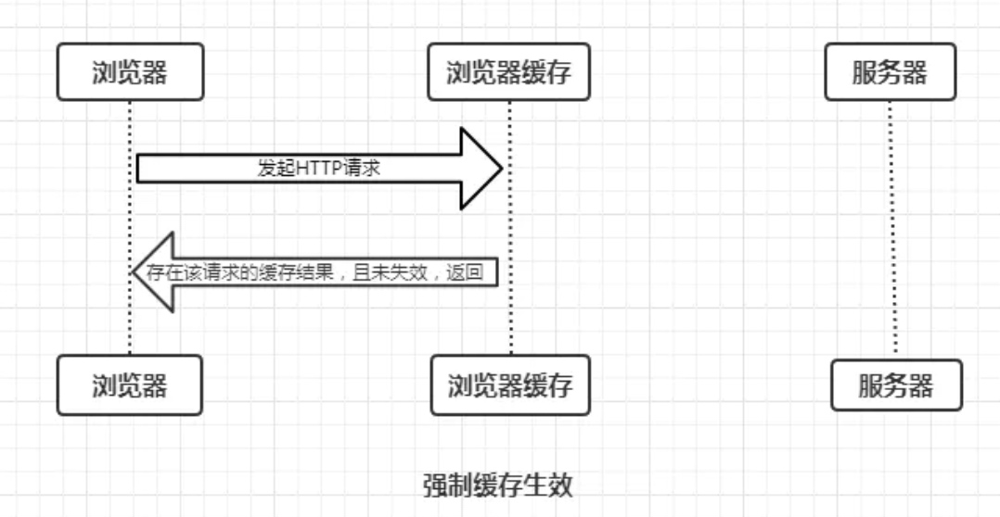
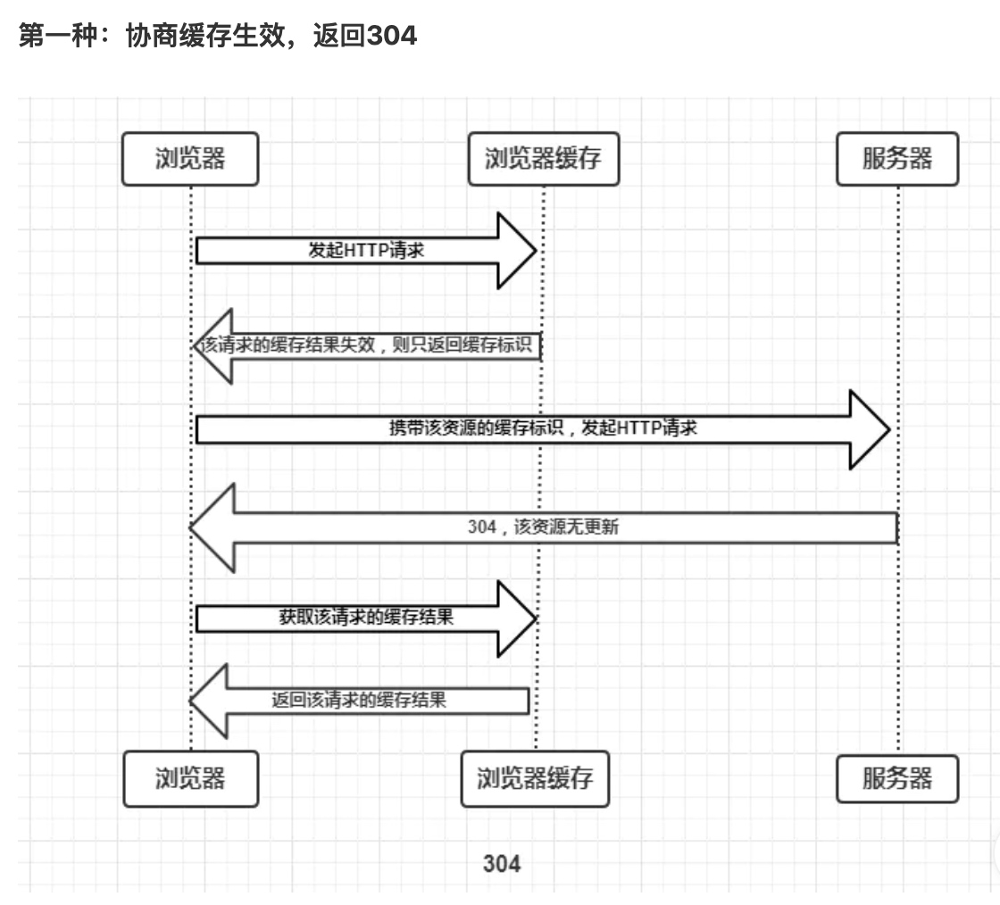
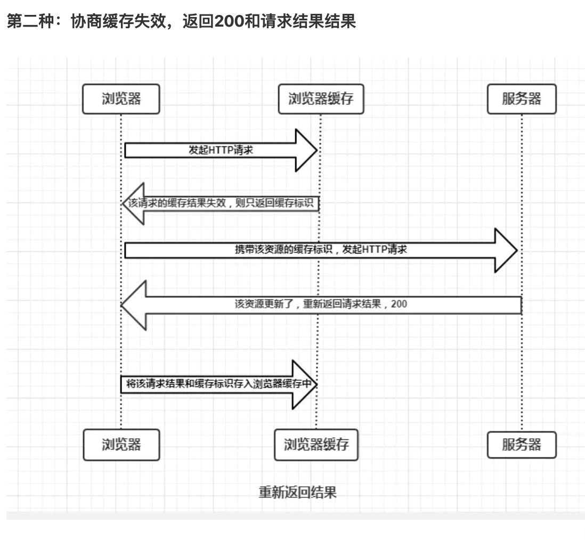
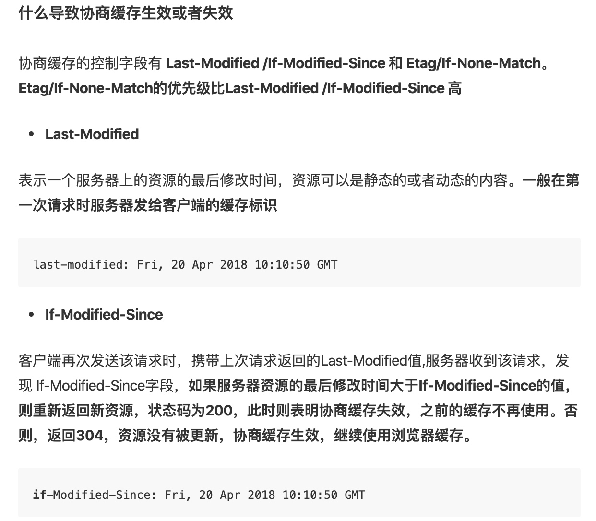
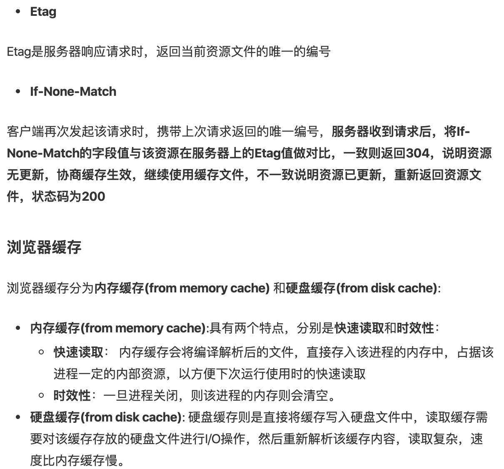
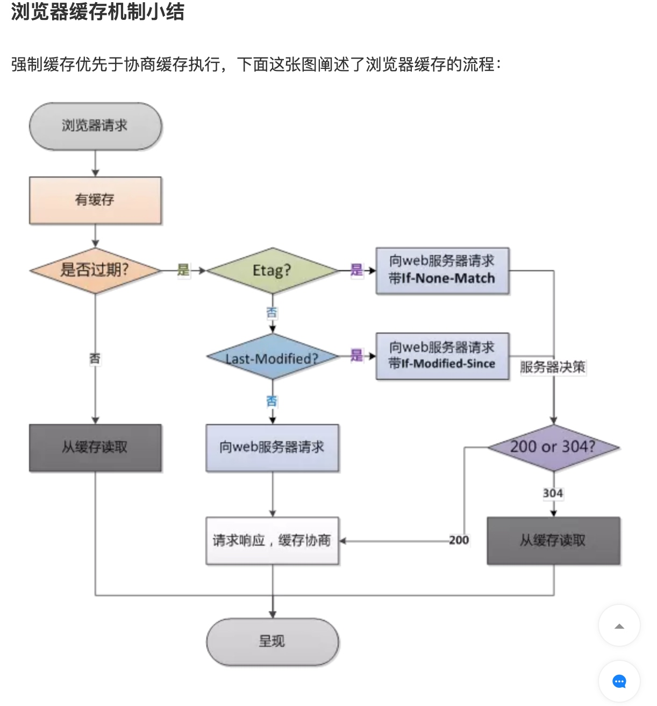
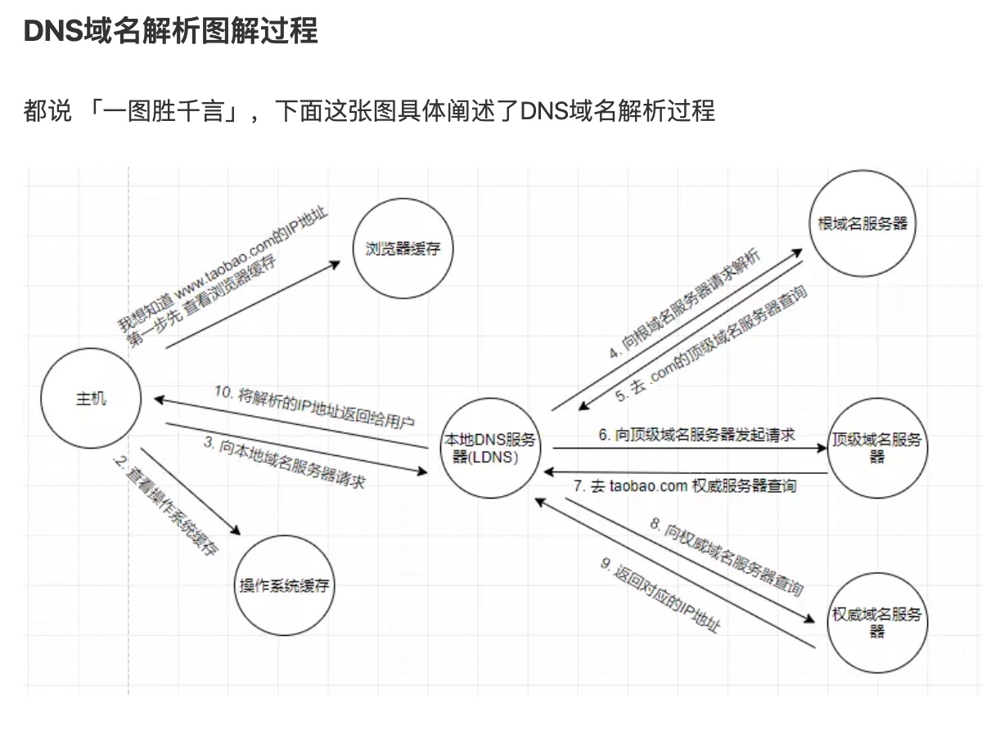

整体流程图

1.浏览器缓存
这里将浏览器缓存机制放在了第一步,如果命中了缓存,在缓存不过期的情况下,会直接使用浏览器缓存的数据,且不需要向服务端请求,彻底理解浏览器的缓存机制这篇博客讲解的非常清楚.
缓存命中过程:

- 浏览器每次发起请求,都会先在浏览器缓存中查询请求结果和缓存标识
- 浏览器每次拿到返回的请求结果都会将该结果和缓存标识存入浏览器缓存中.
强制缓存(也叫本地缓存)
强制缓存就是向浏览器缓存查找缓存结果和缓存标识，并根据该结果的缓存规则来决定是否使用该缓存结果的过程。强制缓存又分为以下几个方面:
不存在该缓存结果和缓存标识，强制缓存失败，则直接向服务器再一次发送请求

存在请求结果和缓存标识，但是该结果已失效过期，强制缓存失败，则使用协商缓存(后续分析)

- 存在请求结果和缓存标识，而且结果未过期，强制缓存生效，直接返回结果 
协商缓存
协商缓存就是强制缓存失效后，浏览器携带缓存标识向服务器发起请求，由服务器根据缓存标识决定是否继续使用缓存的过程。主要分为以下两种情况:

304状态码表示客户端发送附带条件 (附带条件包括If-Match,If-Modified-Since,If-None-Match等字段) 的请求时，服务器端允许请求访问资源，但未满足条件的情况。304状态码返回时，不包含任何响应的主体部分。




注意： 当我们第一次访问一个请求时，浏览器中是没有缓存的，这时候就需要到服务器中去获取，而与服务器连接并获取资源的这个过程，涉及到下面将的 DNS域名解析，TCP连接，HTTP请求等内容。这里把浏览器缓存机制放在第一位，是考虑如果客户多次访问同一个请求，是先去检验浏览器的缓存的
1.DNS 解析
先解释一下,什么是 DNS 解析.
当用户输入一个网址并按下回车键的时候，浏览器得到了一个域名。而在实际通信过程中，我们需要的是一个IP地址。因此我们需要先把域名转换成相应的IP地址，这个过程称作DNS解析
DNS(Domain Name System)是域名系统的英文缩写，是一种组织成域层次结构的计算机和网络服务命名系统，它用于TCP/IP网络，它所提供的服务是将主机名和域名转换为IP地址的工作
分层式 DNS 域名服务器
- 根域名服务器
- 顶级域名服务器
- 权威域名服务器
- 本地域名服务器
DNS域名解析过程
- 浏览器首先搜索浏览器自身缓存的 DNS 记录
- 如果浏览器没有找到需要的记录,或者记录已过期,则搜索 hosts 文件
向本地服务器查询(LDNS)
如果前面两个过程都无法解析，操作系统会把这个域名发送给这里设置的LDNS,也就是本地区的的域名服务器。这个DNS通常都提供给你本地互联网接入的一个DNS解析服务。比如你在学校接入互联网，那么本地DNS服务器就在你的学校。实际上大约80%的域名服务解析都在这里就完成了，LDNS承担了主要的域名解析工作
LDNS没有命中，直接到Root Server域名服务器请求解析
域名服务器返回给本地域名服务器一个所查询域的主域名服务器（gTLD Server)地址
gTLD就是前面说的国际顶级域名服务器，如.com,.cn等。
本地域名服务器再向上一步返回的gTLD服务器发送请求
接受请求的顶级域名服务器查询并返回此域名对应的权威服务器(Name Server)
权威服务器会查询存储的域名和IP的映射关系表并返回
把解析的结果返回给用户，用户根据TTL值缓存在本地系统缓存中，域名解析过程结束
- 递归查询
主机向本地域名服务器的查询一般都是采用递归查询，所为递归查询就是：如果主机所访问的本地域名服务器不知道被查询域名的IP地址，那么本地域名就以DNS客户的身份，替代主机，向其他根域名服务器继续发出查询请求报文，而不是让主机自己进行下一步的查询。
- 迭代查询
本地域名服务器向根域名服务器的查询通常是采用迭代查询。迭代查询就是：当根域名服务器收到本地域名服务器发出的迭代查询请求报文时，要么给出所要查询的IP地址，要么告诉本地域名服务器下一步应当向哪一个域名服务器查询，然后让本地域名服务器进行后续的查询。

3.发起 TCP 请求
浏览器会选择一个大于1024的本机端口向目标IP地址的80端口发起TCP连接请求。经过标准的TCP握手流程，建立TCP连接。
3.发起 HTTP 请求
其本质是在建立起的TCP连接中，按照HTTP协议标准发送一个索要网页的请求。
4.负债均衡
1）什么是负载均衡？当一台服务器无法支持大量的用户访问时，将用户分摊到两个或多个服务器上的方法叫负载均衡。
（2）负载均衡的方法很多，Nginx负载均衡、LVS-NAT、LVS-DR等。这里，我们以简单的Nginx负载均衡为例。
（3）什么是Nginx？Nginx是一款面向性能设计的HTTP服务器，相较于Apache、lighttpd具有占有内存少，稳定性高等优势。Nginx有4种类型的模块：core、handlers、filters、load-balancers。我们这里讨论其中的2种，分别是负责负载均衡的模块load-balancers和负责执行一系列过滤操作的filters模块。
（1）如果我们的平台配备了负载均衡的话，前一步DNS解析获得的IP地址应该是我们Nginx负载均衡服务器的IP地址。所以，我们的浏览器将我们的网页请求发送到了Nginx负载均衡服务器上。
（2）Nginx根据我们设定的分配算法和规则，选择一台后端的真实Web服务器，与之建立TCP连接、并转发我们浏览器发出去的网页请求。
（3）Web服务器收到请求，产生响应，并将网页发送给Nginx负载均衡服务器。
（4）Nginx负载均衡服务器将网页传递给filters链处理，之后发回给我们的浏览器.
5.浏览器渲染
（1）浏览器根据页面内容，生成DOM Tree。根据CSS内容，生成CSS Rule Tree(规则树)。调用JS执行引擎执行JS代码。
（2）根据DOM Tree和CSS Rule Tree生成Render Tree(呈现树)。
（3）根据Render Tree渲染网页。
在浏览器解析页面内容的时候，发现页面引用了其他未加载的image、css文件、js文件等静态内容，因此开始了第二部分。
6.网页静态资源加载
以阿里巴巴的淘宝网首页的logo为例，其url地址为img.alicdn.com/tps/i2/TB1bNE7LFXXXXaOXFXXwFSA1XXX-292-116.png_145x145.jpg
我们清楚地看到了url中有cdn字样。
什么是CDN？如果我在广州访问杭州的淘宝网，跨省的通信必然造成延迟。如果淘宝网能在广东建立一个服务器，静态资源我可以直接从就近的广东服务器获取，必然能提高整个网站的打开速度，这就是CDN。CDN叫内容分发网络，是依靠部署在各地的边缘服务器，使用户就近获取所需内容，降低网络拥塞，提高用户访问响应速度。
接下来的流程就是浏览器根据url加载该url下的图片内容。本质上是浏览器重新开始第一部分的流程，所以这里不再重复阐述。区别只是负责均衡服务器后端的服务器不再是应用服务器，而是提供静态资源的服务器。